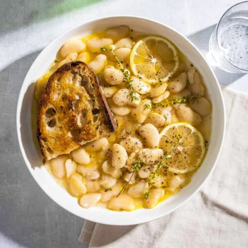

Lemon Sage Beans

These stove top beans are easy to make and are delicious as a side, sauce, or main staple with rice.
Beans, beans, beans! I mean come on, who doesn't like legumes? And if you find them cook them this to change their mind!
Always wash your beans. A hand held strainer makes this much easier.
Ingredients
- 1 can of Great Northern Beans, drained and thoroughly rinsed with cold water
- 1/2 tablespoon butter
- 2 tablespoon EVOO
- 3-4 garlic cloves pressed or diced
- 1/2 a fresh lemon
- 1-2 tablespoon sage
- 1-2 tablespoon of cumin may be subsituted for sage
- salt and ground black pepper to taste
Steps
- Drain and rinse beans and set to side
- Heat sauce pan on high, add EVOO, and briefly saute garlic
- Add rinsed beans then add water until beans covered with about 1/4 inch of water above them
- Add spices, salt and pepper, then stir and add butter. Reduce to low and cook uncovered until water evaporates, stiring occationally
- Water level will determine the consistancy of the final dish. When most of the water is gone remove from heat, zest lemon into pot, then squeeze the lemon avoiding any seeds ending up in the beans.
- Stir, transfer to serving dish, and enjoy!